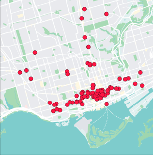

People Nearby:

Customize Profile ⚙️
Direct Messaging 💬
Outgoing Requests 📤
Me: Need petsitter for two days. (2 responses)
Sarah: I can help! DM me

Jane: I can if they aren’t a cat.

Incoming Requests 📩

Kathy: Need help moving furniture
0.9 miles away
✅
❌
Anna:Need help cleaning yard
1.2 miles away
✅
❌

Jeffery: Need another tire and gas
0.2 miles away
✅
❌
About the Application
- Neighborhood Helper is a community app that connects neighbors so they can help one another with everyday needs. Users can request or offer assistance, such as borrowing tools, helping with yard work, pet sitting, grocery pickups, or sharing local recommendations. The app also allows neighbors to organize community events, report neighborhood issues, and stay informed about important local updates. By making it easy to communicate and lend a hand, Neighborhood Helper helps build stronger, safer, and more connected communities.
History
- Neighborhood Helper was created to make it easier for neighbors to connect and help one another. The idea came from noticing that many people needed small favors or local support but had no simple way to reach nearby neighbors. The app was designed to encourage kindness, build stronger communities, and make neighborhoods safer by bringing people together in one place.
Goals
- Connect neighbors and strengthen the local community. Make it easy to request and offer help for everyday tasks. Encourage kindness, trust, and teamwork among neighbors. Keep residents informed about local events and neighborhood updates. Create a safer, more supportive, and more connected neighborhood.
Inspiration
- We were inspired to create Neighborhood Helpers because we recognized that all people need help from time to time, and we thought why not make an app that solves this problem in a clever way. Realizing that the most convenient way of getting help are from the ones that are nearest you, we came up with the idea of creating an app that allows people in their local neighborhoods to help each other, hence the creation of Neighborhood Helpers.
Target Audience
- Homeowners looking to connect with nearby neighbors. Renters living in apartments or neighborhoods. Senior citizens who may need occasional assistance. Busy families who need help with everyday tasks. Students and young adults who want to get involved in their community. Community organizations and neighborhood associations.